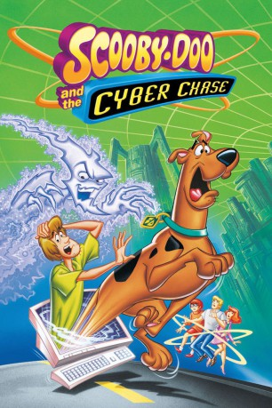

IMDB-Wertung: 7.0 / 10
IMDB-Wertung: 7.0 / 10  Metascore:
Metascore: 
Scooby-Doo und seine Gang sind in einem Videospiel gefangen. Sie folgen den Scooby-Snacks bis in den letzten Level des Spiels, wo sie auf eine Cyber-Gang treffen, deren Mitglieder genauso aussehen wie sie.
Alternativ: Scooby-Doo and the Cyber Chase
 IMDB-Wertung: 7.0 / 10 Metascore:
Scooby-Doo und seine Gang sind in einem Videospiel gefangen. Sie folgen den Scooby-Snacks bis in den letzten Level des Spiels, wo sie auf eine Cyber-Gang treffen, deren Mitglieder genauso aussehen wie sie.
Jahr: 2001
Dauer: 89 Minuten
FSK: 6
Land: USA Studio: Warner Home VideoTonspuren:
Untertitel:
Auflösung: SD (696x508) Größe: 714 MB
Genre: Animation/Trick, Action, Abenteuer, Komödie, Familie, Mystery, Sci-Fi
Regisseur: Jim Stenstrum
Drehbuch: Mark Turosz, Joseph Barbera, William Hanna
Soundtrack: Louis Febre
Darsteller:
 Bob Bergen als Eric Staufer
Bob Bergen als Eric Staufer Grey Griffin als Daphne Blake / Cyber Daphne Blake
Grey Griffin als Daphne Blake / Cyber Daphne Blake B.J. Ward als Velma / Cyber-Velma
B.J. Ward als Velma / Cyber-Velma Frank Welker als Fred / Cyber-Fred
Frank Welker als Fred / Cyber-FredDatei: X:\Kinder Collections\Scooby-Doo\Scooby-Doo und die Cyber-Jagd (2001, FSK6, 696x508).mkv seit 14.11.2015
Festplatte: Kinder-Filme+Trick
 Es gibt insgesamt 17 Filme in der Gruppe 'Kinder Collections\Scooby-Doo'
Es gibt insgesamt 17 Filme in der Gruppe 'Kinder Collections\Scooby-Doo'